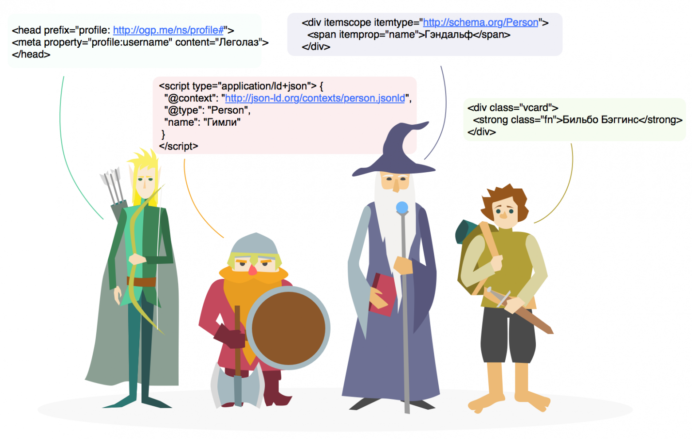

Что такое синтаксис
Синтаксис — это способ использования такого языка, т.е. словаря. Он определяет, с помощью каких тегов и как будут указываться сущности и их свойства, например, на веб-страницах.
Стандартов синтаксиса, как и словарей, несколько. В этой статье мы и разберем на практических примерах наиболее распространенные:
- Microdata — Микроданные (словарь Schema.org чаще всего встречается именно в этом синтаксисе);
- Microformats.org — Микроформаты (напоминаем, что это объединенный стандарт синтаксиса и словаря);
- RDFa и RDFa Lite (в упрощенном виде RDFa рекомендуется создателями словаря Open Graph. Также встречается с другими словарями, например, со словарем Dublin Core или Data Vocabulary);
- JSON-LD — расширение JSON.
Чтобы понять, почему для решения одной задачи было разработано много разных стандартов, обратимся к истории развития синтаксиса:
В 2004 году разработчики из W3C создали стандарт, который, по их мнению, подходил для «представления всего в мире». Так появился синтаксис RDFa (Resourse Description Framework in attributes), который позволяет однозначно транслировать HTML-разметку с семантическими данными в RDF.
Примерно через год несколько энтузиастов решили придумать свой «простой» стандарт, в котором использовались бы уже существующие элементы HTML. И придумали всем известные Микроформаты.
Чуть позже Ян «Хикси» Хиксон, сотрудник Google и на тот момент участник W3C, решил написать альтернативную версию HTML5 и создать свой синтаксис. Появились Микроданные — простой, но не совместимый с RDF стандарт. W3C сообщество отреагировало неоднозначно на эту инициативу, и в итоге Хикси ушел из W3C и к тому же основал свое альтернативное сообщество WHATWG. *
Microdata стал первым синтаксисом, в котором рекомендовали использовать словарь Schema.org. Когда в W3C возник вопрос о том, почему Микроданные, а не RDFa, один из основателей Schema.org Ramanathan V. Guha или просто Guha (тоже сотрудник Google и даже Google Fellow) ответил письмом примерно следующего содержания: «Ваш RDFa настолько сложен, что в 90% случаях его использования допускаются ошибки». В ответ на письмо разработчики RDFa довольно быстро выпустили RDFa lite — синтаксис не сложнее Микроданных, но совместимый с RDF и расширяемый до RDFa.*
А позже Manu Sporny, один из создателей RDFa, столкнулся с необходимостью в передаче структурированной информации из JSON в RDF, когда работал над своим проектом, где было много данных в JSON. Он и его коллеги осознали, что нужно придумать что-то вроде RDFa для JSON.*
И в результате долгой и упорной работы был выпущен синтаксис JSON-LD (JavaScript Object Notation for Linked Data), который не только решил первоначальную задачу, но и реализовал идею по распространению Linked Data. В мире семантики появился синтаксис, который в отличие от всех остальных, разработан для внедрения в тег и использования в сервисных API.
В общем, каждый синтаксис представляет собой набор атрибутов и правил по их использованию. В одном синтаксисе можно использовать и комбинировать различные словари (за исключением микроформатов). Но у всех стандартов есть свои особенности, которые мы и разберем далее в статье.
1. MICRODATA (МИКРОДАННЫЕ)
Ключевые элементы микроданных — это атрибуты itemscope, itemtype и itemprop, указывающие на сущности и их свойства.
Пример, размеченный в синтаксисе микроданных с использованием словаря Schema.org:
<div itemscope itemtype="http://schema.org/Person">
<span itemprop="name">Юрий Гагарин</span>
<img src="gagarin.jpg" itemprop="image"/>
<span itemprop="jobTitle">Летчик-космонавт</span>
<span itemprop="colleague">Валентина Терешкова</span>
<link itemprop="nationality" href="http://ru.wikipedia.org/wiki/Россия">Россия
<time itemprop="birthDate" datetime="1934-03-09">9 марта 1934</time>
<span itemprop="memberOf">Военно-воздушные силы СССР</span>
<span itemprop="knows">Сергей Королев</span>
<time itemprop="deathDate" datetime="1968-03-27">27 марта 1968</time>
<span itemprop="award">Герой Советского союза</span>
<a href="http://ru.wikipedia.org/wiki/Гагарин,_Юрий_Алексеевич" itemprop="sameAs">Страница на Википедии</a>
<a href="http://example.com/Гагарин" itemprop="url">Сайт Юрия Гагарина</a>
</div>
- itemscope указывает парсеру на то, что в HTML-блоке ... содержатся данные об объекте. Часто уточняют, нужно ли указывать значение артибута itemscope — в соответствии со спецификацией HTML5 значение для логических атрибутов задавать не обязательно, достаточно просто указать название атрибута;
- itemtype с помощью ссылки schema.org/Person указывает на конкретный тип объекта;
- itemprop указывает на свойства этого объекта.
В этом примере с помощью link itemprop объект описывается с помощью невидимых ссылок.
На странице можно размечать несколько сущностей с одинаковым типом (itemtype), и внутри одной сущности может быть несколько одинаковых полей (itemprop). Если вы делаете разметку для конкретного потребителя, то могут встретиться дополнительные условия.
Есть еще одна особенность микроданных, с которой мы столкнулись в работе — это часто и внезапно меняющаяся спецификация. По истории этой документации можно отследить, что раньше она обновлялась как минимум ежегодно, а то и по несколько раз в год.
Обычно все инициативные группы выступают за разметку видимого пользователям содержания. Но в некоторых случаях нужно описать данные так, чтобы на сайте отображался человекочитаемый текст, а парсер получал данные в машиночитаемом формате. В таком случае скрыть данные необходимо, и для этого можно использовать тег meta:
<div itemscope itemtype="http://schema.org/Offer">
<span itemprop="name">Чехол для Iphone</span>
<span itemprop="price">700 рублей</span>
<div itemprop="aggregateRating" itemscope itemtype="http://schema.org/AggregateRating">
<img src="four-stars.jpg" />
<meta itemprop="ratingValue" content="4" />
<meta itemprop="bestRating" content="5" />
Основан на <span itemprop="ratingCount">25</span> голосах пользователей
</div>
</div>
В синтаксисе микроданных возможно описывать вложенные сущности
<div itemscope itemtype="http://schema.org/Person">
<span itemprop="name">Юрий Гагарин</span>,
<span itemprop="address" itemscope itemtype="http://schema.org/PostalAddress">
<span itemprop="addressLocality">Байконур</span>,
<span itemprop="addressCountry">Казахстан</span>,
</span>
</div>
В этом примере свойство "address" также являются сущностью и обладает своими свойствами "addressLocality" и "addressCountry".
Microdata все больше набирает популярность из-за доступности внедрения, предусмотренных возможностей и отчасти благодаря стандарту Schema.org. Также рекомендуется вместе со словарем Schema.org поисковыми системами, например, Яндексом и Google.
Полезные ссылки:
Описание микроданных в W3C;
Статья о Microdata
в блоге об HTML5;
Документация в WHATWG.
2. Microformats.org (Микроформаты)
Микроформаты — это инициатива энтузиастов из W3C, которые хотели сделать простой стандарт семантической разметки и для этого использовали базовые элементы HTML. Стандарт Microformats.org — один из старейших, был запущен в 2005 году.
Особенность микроформатов — это применение тегов (обычно или ) c атрибутами class, rel, rev или title для передачи семантической информации. Для обозначения сущностей и их свойств используются только уже существующие атрибуты и не вводятся новые.
Например, добавив class="adr" мы указали, что в этой строчке описан адрес:
<div class="adr"> Москва, ул. Льва Толстого, 16</div>
В этом примере HTML-элементу был добавлен атрибут class, значение которого представляет собой имя свойства, предусмотренного микроформатом.
Пример небольшого HTML-блока, размеченного микроформатом hCard (с помощью этого микроформаты описывается человек или организация, в нашем случае — человек).
<div class="vcard">
<img class="photo" src="http://example.com/gagarin.jpg" />
<strong class="fn">Юрий Гагарин</strong>
<span class="title">Летчик-космонавт</span>
<span class="org">Военно-воздушные силы СССР</span>
<a class="url" href=http://example.com/Гагарин>Страница Ю.Гагарина</a>
<div class="bday">
<span class="value-title" title="1934-03-09">9 марта 1934</span>
</div>
<span class="note">Первый человек в космосе</span>
<span class="adr">
<span class="type">work</span>
<span class="locality">Байконур</span>
<span class="country-name">Казахстан</span>
<span class="postal-code">468320</span>
</span>
</div>
В первой строке class="vcard" указывает, что HTML-код в тегах описывает человека; для описания используются такие свойства, как фотография, имя, должность, адрес страницы, день рождения и заметка; в каждом элементе, содержащем эти данные, добавлен атрибут class и указано конкретное свойство, предусмотренное микроформатом; свойство "адрес" содержит вложенные свойства: "тип", "город", "страна", "почтовый индекс"
3. RDFa
В 2004 году данный синтаксис разработали специалисты из W3C (World Wide Web Consortium) для структурирования данных на сайтах. Все данные размечаются в HTML-коде. В наше время синтаксис RDFa почти не используется из-за сложности реализации. Поэтому представители Google вскоре начали отдавать предпочтение синтаксису Microdata для словаря Schema.org.
На данный момент RDFa чаще всего используется в словаре Open Graph. Пример разметки статьи синтаксисом RDFa:
<div vocab="http://schema.org/" typeof="Article">
<span property="name">RDFa</span>
by <span property="author">SEO-специлист</span>
Эту статью твитнули 20 раз и откомментировало 10 человек
<div property="interactionStatistic" typeof="InteractionCounter">
<div property="interactionService" itemscope itemid="http://www.twitter.com"
itemtype="http://schema.org/Website">
<meta property="name" content="Twitter" />
</div>
<meta property="interactionType" content="http://schema.org/ShareAction"/>
<meta property="userInteractionCount" content="20" />
</div>
<div property="interactionStatistic" typeof="InteractionCounter">
<meta property="interactionType" content="http://schema.org/CommentAction"/>
</div>
</div>
4. JSON-LD
Самый молодой и актуальный формат. Первый черновик этого синтаксиса появился в 2010 году. Основное отличие от остальных — JSON-LD внедряется не в код страницы, а в тег <script>. JSON-LD представляет из себя набор пар “ключ-значение”, который очень легко понимает не только поисковый бот, но и сам человек. Например, нам необходимо разметить статью при помощи JSON-LD
<script type="application/ld+json">
"{
"@context": "http://schema.org",
"@type": "Article",
"author": "SEO-специалист",
"interactionStatistic": [
{
"@type": "InteractionCounter",
"interactionService": {
"@type": "Website",
"name": "Twitter",
"url": "http://www.twitter.com"
},
"interactionType": "http://schema.org/ShareAction",
"userInteractionCount": "20"
},
{
"@type": "InteractionCounter",
"interactionType": "http://schema.org/CommentAction",
"userInteractionCount": "10"
}
],
"name": "JSON-LD"
}"
</script>
Рассмотрим чуть подробней:
- @context, @type, author, interactionStatistic, interactionService, name, url, interactionType, userInteractionCount — ключи;
- SEO-специалист, Twitter, http://www.twitter.com, 20, 10 — значения.
С 2013 года JSON-LD рекомендует Schema.org и с 2014 года Google также рекомендует переходить на данный синтаксис. Для упрощения работы можно использовать онлайн генератор микроразметки — Schema Markup Generator (JSON-LD)